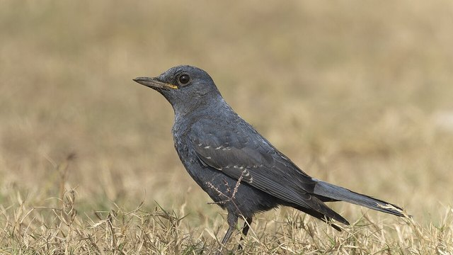

物理5–11 岁约 10 分钟
跟在行军蚁后面才捡得到吓跑的虫，自己乱找就找不到？
同一只纸蚁鸟。跟在行军蚁后面才捡得到吓跑的虫；自己乱找就找不到。蚁队像一把移动的扫帚在落叶里推过去，躲着的蟋蟀蜘蛛吓得蹦出来逃命；它守在蚁队边上的低枝，虫一露头俯身就叼。本页不碰真蚁、不追真的，观察后洗手。
同一只纸蚁鸟，跟蚁一回，乱找一回

跟在行军蚁后面才捡得到吓跑的虫。自己乱找就找不到。先点「跟蚁」，再点「试一试」。
先猜一猜，再试
第 1 题：跟 80，跟在行军蚁后面，捡得到虫吗？
押一个。把跟调到 80，再点试一试。
第 2 题：跟 10，自己乱找，还捡得到吗？
押好后跟 10，再试一试。
第 3 题：跟 50，刚好一半，算捡到了吗？
押好后跟 50，再试一试。
同一只纸蚁鸟：跟在行军蚁后面才捡得到吓跑的虫；自己乱找就找不到
先点「跟蚁」再点「试一试」，看捡到吓跑的虫。再点「乱找」试一次，看是不是找不到。
纸蚁鸟始终是同一只。它吃的多半不是蚂蚁，是被蚁队赶出来的虫：蚁队在落叶里推过去，虫吓得蹦出来，它守在旁边低枝上一只只叼；离了蚁队自己乱找，虫都藏着不动，翻一天也碰不上几只。鸫跑着翻落叶是另一套，不比。
舞台上的「捡到」是本页比较尺子：跟 ≥ 80 才算捡得到。刚好 50 还不够。不碰真蚁、不追真的，观察后洗手。本页用纸板。
跟蚁图鉴
点一张，对照舞台：谁让跟在行军蚁后面才捡得到吓跑的虫，谁让自己乱找就找不到。
点一张图鉴，对照为什么跟在行军蚁后面才捡得到吓跑的虫。
猜一猜
同一只纸蚁鸟要捡到吓跑的虫，靠的是跟蚁，还是乱找？
先押一个，再点「看答案」。
任务：跟蚁和乱找都试
先把跟调到 80 或更高试一次，再调到 20 或更低试一次。两头都点过「试一试」即可完成。
开放式提示不会代替上面的正式任务。
尚未完成：先跟蚁试一次，或乱找试一次。
同一只纸蚁鸟，先跟蚁试一次，再乱找试一次
舞台上只改一件事：跟在行军蚁后面有多紧。同一只纸蚁鸟、同一列蚁，先跟蚁试一次，看捡不捡得到；再乱找试一次，看是不是找不到。这样比，才知道捡虫靠的是跟蚁，不是「乱找更能捡」，也不是「鸫那种跑着找」。
回家只带两句：「跟在行军蚁后面才捡得到吓跑的虫」；「自己乱找就找不到」。不要写成「越乱找越好」。
虫被蚁队赶得蹦出来，守在旁边才一只只捡得到。
虫藏在落叶下不动，自己乱找翻一天也碰不上几只。
鸫跑着找另开；本页比跟不跟，两句不要并成一句。
不碰真蚁、不追真的，本页用纸板对照。
这在教什么：孩子要能对跟蚁和乱找各报捡得到或找不到，并否定「鸫那种跑着找」和「乱找更能捡」。
- 本页比的是纸蚁鸟守在行军蚁队边上捡吓得蹦出来的虫，还是鸫自己跑着翻落叶、自己乱找那种童话？
- 乱找，台上还捡得到吗？
- 蚁队像扫帚推过去，它不跟在边上会怎样？
- 能去碰真蚁、追真的蚁鸟吗？
捡虫靠跟在行军蚁后面，不是跑着找，更不要去碰真蚁
行军蚁大队在落叶里推过去，躲着的蟋蟀蜘蛛吓得蹦出来逃命；蚁鸟守在蚁队边上的低枝，虫一露头俯身就叼——吃的多半不是蚂蚁，是被赶出来的虫。离了蚁队自己乱找，虫都藏着不动，翻一天也碰不上几只。
不要把它讲成「跑得越勤越好」或「变成鸫就能捡」。鸫自己跑着翻落叶是另一套；没有蚁队赶虫，乱找就是碰运气。
不碰真蚁，不追真的。看完按二十秒洗手。本页用纸板。
给家长的问题
- 跟蚁那一次，孩子指的是蚁列和鸟，还是在说「它比较勤快」？让他再指一次行军蚁后面。
- 乱找，为什么找不到？哪一句四岁听得懂？
- 如果他说「鸫跑着找就能捡」——跑着找是哪一笔账？本页少的是跟蚁还是跑着找？
- 鸫跑着找和蚁鸟跟蚁，差在「翻落叶」还是「跟在行军蚁后面」？
- 不碰真蚁、不追真的、看完洗手：红线怎么说？本页能当抓蚁课吗？
背后的原理
舞台上不写这些词，留给孩子用眼睛看。蚁鸟（Thamnophilidae）跟在行军蚁后面，才捡得到被吓跑的虫。自己乱找就找不到。本页用跟 ≥ 80 当门槛，≤ 20 算自己乱找。刚好 50 不算捡到。
这不是鸫跑着找说明书，也不是自己乱找。跑着找另开，都不要并进本页第一完成句。
人去碰真蚁会被咬。不追活鸟。观察后洗手。舞台用纸板。
接下来可以去
带走句：跟在行军蚁后面才捡得到吓跑的虫；自己乱找就找不到。蚁鸟观察站看真跟蚁。